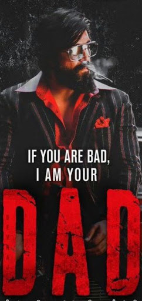

Prashanth Neel's KGF, which stars Yash in the lead, has become arguably the most spoken about Kannada film nationally. The expectations have been enormous. Does the team deliver? Yes, they do. Yash, as Rocky, lives his character to the fullest and his screen presence definitely has the viewers cheering alongside him.
Rocky was born to a poor lady who preaches Rocky that being rich & strong are necessary in this cruel world and dies after making him promise that no matter how he lives, he'll die as a rich person with pride. Rocky meets a mad beggar who tells that power is the only thing that can make people rich and popular instantly. One of the other children says about the Don in Mumbai and how people respect them. A situation arises when member from don was expected to hit a policeman who playfully asks who among the children can do this, Rocky takes up the task and beats up the policeman and introduces himself as Rocky & hence become popular in the city. Rocky grows up as one of the dons of Mumbai taking all gold exports business to his hands. He is then recognized by Rajendra Desai who asks him to do a task in Bangalore succeeding which he'll give entire Mumbai Underworld region to him. Rocky takes up the tasks and leaves to Bangalore.
Rajendra Desai team explains Rocky of plan to kill Garuda on his way to party office where he's expected to come. Rocky makes proper plan and Rajendra Desai supports by giving team and providing gun in the avenue which is surrounded with guards. Rocky comes to know of Garuda's power in the assembly and takes back his decision to shoot him and decides to conquer entire KGF by himself. Rocky is then given instructions & half blueprint to enter KGF, give large sign & kill Garuda. Rocky makes plan to enter region where people are picked to work in Narachi. Eventually gets picked up to KGF where he gets to know of the situation of people in KGF. Rocky had main aim of finding the only hidden subway that directly leads to Garuda's place from Narachi. Rocky gets emotionally disturbed by the situation of people & violence in KGF. Few of Garuda's members had betrayed during the year, Garuda decides to give them Sacrifice to the god instead of sheeps. These people are taken to the secret room. Rocky enters the same room through the hidden subway and remains to be there with the help of Rajendra desai's people in KGF.